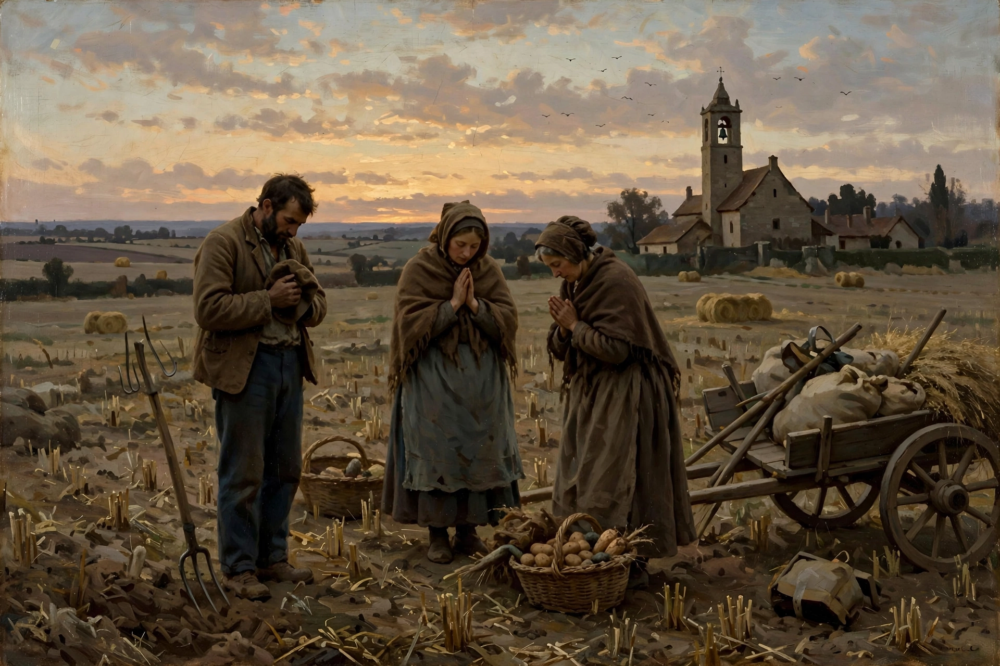

The Angelus (Latin for "angel") is a Catholic devotion commemorating the Incarnation of Christ, traditionally recited at 6 a.m., noon and 6 p.m., announced by the ringing of a church bell. The prayer takes its name from its opening words in Latin: Angelus Domini nuntiavit Mariae — "The Angel of the Lord declared unto Mary."
| Angelus | |
|---|---|
| Tradition | Roman Catholic |
| Times | 06:00, 12:00, 18:00 |
| Commemorates | The Annunciation and Incarnation |
The devotion consists of three versicles and responses based on the Annunciation in Luke's Gospel, each followed by a Hail Mary, and concludes with a collect. During Eastertide the Angelus is replaced by the Regina caeli. The practice developed from the monastic custom of evening prayers and the ringing of the compline or curfew bell in the 13th–16th centuries; the thrice-daily recitation was promoted by Pope John XXII and others, and indulgences were attached to it.
The devotion is famously depicted in Jean-François Millet's painting The Angelus (1857–1859), showing two peasants pausing in a field at dusk to pray as the bell sounds from a distant church. Many cathedrals and parishes still ring the Angelus bell, and the Pope traditionally leads the Angelus prayer in St Peter's Square on Sundays.
Angelus — recreated from memory.